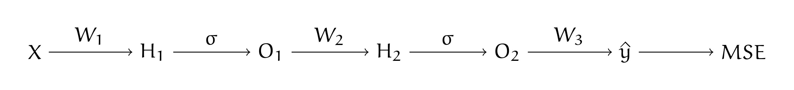
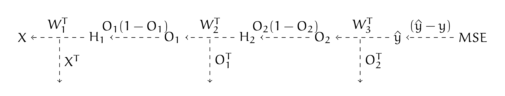
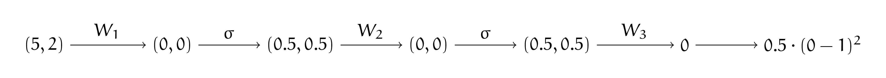
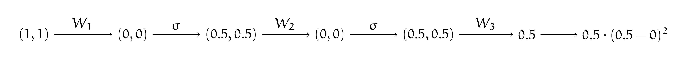

6. Бэкпроп своими руками
6. Бэкпроп своими руками#
У Маши есть нейросеть с картинки ниже. Она использует функцию потерь
В качестве функции активации Маша выбрала сигмоиду \(\sigma(t) = \frac{e^t}{1 + e^t}\).
{kind=link}
Выпишите для Машиной нейросетки алгоритм обратного распространения ошибки в общем виде. Пусть Маша инициализировала веса нейронной сети нулями. У неё есть два наблюдения.
Первое: \(x_1 = 1, x_2 = 1, y = 1\). И второе: \(x_1 = 5, x_2 = 2, y = 0\).
Сделайте руками два шага алгоритма обратного распространения ошибки. Пусть скорость обучения \(\eta = 1\). Стохастический градиентный спуск решил, что сначала для шага будет использоваться второе наблюдение, а затем первое.
Решение
Для начала запишем алгоритм в общем виде. Для этого нам надо взять схему из предыдущей задачи и записать там все производные. Для сигмоиды \(\sigma'(t) = \sigma(t) \cdot (1 - \sigma(t)).\) Прямой проход по нейронной сети (forward pass):
{kind=link}
Обратный проход по нейронной сети (backward pass):
{kind=link}
По аналогии с предыдущей задачей выпишем формулы для обратного распространения ошибки. На третьем слое:
На втором слое:
На первом слое:
Когда мы аккуратно подставим все числа, можно будет сделать шаг SGD
Сделаем шаг SGD для второго наблюдения. Делаем прямое распространение для второго наблюдения, напомним, что матрицы весов инициализированы нулями:
{kind=link}
Делаем обратный проход.
Шаг 1:
Шаг 2:
Шаг 3:
Делаем шаг градиентного спуска
Сделаем шаг SGD для первого наблюдения. Делаем прямое распространение для второго наблюдения, напомним, что матрицы весов инициализированы нулями:
{kind=link}
Делаем обратный проход.
Шаг 1:
Шаг 2:
Шаг 3:
На этой задаче видно, как сигмоида способствует затуханию градиента. Её производная по абсолютной величине всегда принимает значения меньше \(1\). Из-з этого значение \(d\) от слоя к слою становится всё меньше и меньше. Чем ближе к началу нашей сети мы находимся, тем на меньшую величину шагают веса. Если сетка оказывается очень глубокой, такой эффект ломает её обучение. Его обычно называют \indef{параличом нейронной сети.} Именно из-за этого сигмоиду обычно не используют в глубоких архитектурах.
Делаем шаг градиентного спуска
Объясните, почему инициализировать веса нулями — плохая идея. Почему делать инициализацию весов любой другой константой — плохая идея?
Решение
Из-за того, что мы инициализировали веса нулями, слои поначалу учатся по-очереди. Пока мы не сдвинем веса более поздних слоёв, веса более ранних слоёв не сдвинутся. Это замедляет обучение. Обратите внимание, что все веса меняются на одну и ту же величину в одном и том же направлении.
При инициализации любой другой константой этот эффект сохраниться. Нам хочется, чтобы после обучения нейроны внутри сетки были максимально разнообразными. Для этого веса лучше инициализировать случайно. В будущем мы обсудим грамотные способы инициализации, которые не портят обучение.